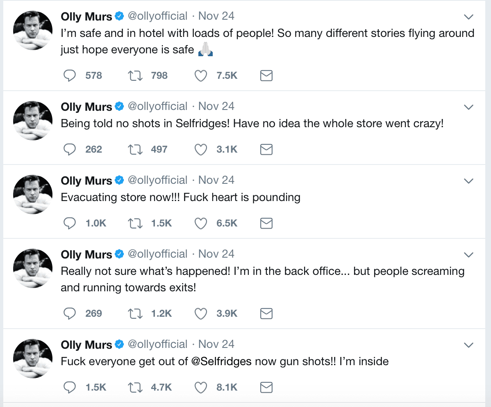
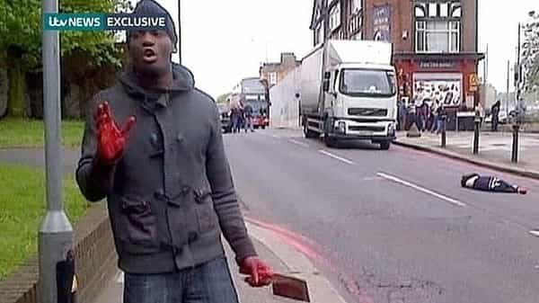
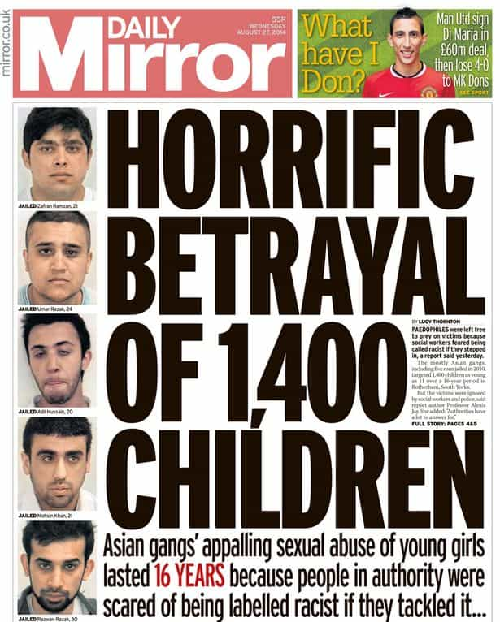

Michael is the author of Staying Married in a Degenerate Age. Follow him on Twitter or Facebook. You can read more of his writing at Honor and Daring.


The British are among the most formidable people in Europe. Before the Great War they held the greatest Empire the world has ever seen. It was rightly said that the sun never set on British soil. But a recent incident in a London tube station demonstrates that the British have been conquered by liberalism.

The incident occurred on the afternoon of November 24th at the Oxford Circus tube station. Although the British do not celebrate American Thanksgiving, they have adopted the terrible American custom of “Black Friday” so the subway was teaming with shoppers trying to get Christmas deals. Apparently, an altercation between two men inside the tube station set off a panic.
A number of passengers started to flee, thinking that they had heard gunshots. Once they got outside of the station, people on the outside also started to panic and flee. The police were called and two tube stations were shut down as a result. As anyone who is familiar with subway systems in large cities knows, shutting down two stations during rush hour on the busiest shopping day of the year is a big deal.
Scotland Yard tweeted out that people should get into the nearest building and huddle for shelter. This caused people to run into the nearest pub or restaurant. The terrified populace was hiding in the cellars of these businesses. A BBC producer described the panic:
There was a mass stampede of people running and trying to get away as quickly as they could. They were crying, they were screaming, they were dropping their shopping bags. It was a very panicked scene. A couple of people said they thought it was a gunshot or a fire.
Social media played a big role in spreading the panic. Olly Murs, a British pop singer who was shopping at Selfridges, a British department store tweeted to his eight million followers that there had been gunshots inside the store.
By the time the whole panic was over, 16 people had been injured in the stampede. Fortunately, there were no deaths.
This panic is totally out of character with the Brits who are known for their stiff upper lip in times of crisis. These Londoners are the descendants of the people who conquered a vastly superior French force at Agincourt. This is the same group of people who defeated the combined French and Spanish navies at the Battle of Trafalgar. And the descendants of those Londoners whose motto during the German bombing was to Keep Calm and Carry On.
So what has happened to the British that has caused them to lose their courage?

The immediate reason for the Brits losing their nerve is the number of Islamic related terror attacks that have occurred in the past few years. This started with the “7/7” London bombing of the subway and a double decker bus. 52 people were killed as the result of the attacks and over 700 were injured.
In the past few years, the number of attacks have increased. In 2017 alone there were three terrorist attacks. The first was happened in March when a man drove his car into pedestrians on Westminster Bridge killing eight. Two months later another Islamic attack happened at an Ariana Grande concert in Manchester that killed 22 and injured over 200, most of them children. Less than two weeks later, three terrorists drove their van across London bridge killing eight. These attacks would be enough to put anyone on edge. There is no doubt that the people at the Oxford Circus thought another terrorist attack was underway.

Despite Islamic terrorism being the proximate cause of the panic, I don’t believe Islam is the real problem. The problem with Islamic immigrants predates any of the 2017 attacks. Britain has been suffering from Muslim rape grooming gangs for decades now. The Rotherham rape gang operated for over 30 years before being broken up.
How could something so awful as the rape of thousands of English girls be allowed to continue right under the nose of the police? The answer lies in political correctness. The police felt that breaking up the rape gang would stir up allegations of racism and the politicians didn’t want to lose a valuable voting bloc.
The failure to address the abuse was attributed to a combination of factors revolving around race, class and gender—contemptuous and sexist attitudes toward the mostly working-class victims; fear that the perpetrators’ ethnicity would trigger allegations of racism and damage community relations; the Labour council’s reluctance to challenge a Labour-voting ethnic minority; lack of a child-centred focus; a desire to protect the town’s reputation; and lack of training and resources.
Thus, the lives of these young girls were sacrificed to the false god of progressivism—the authorities were more afraid of being called racist than they were making protecting their daughters from pedophiles.
How did progressivism (or liberalism, I use the terms interchangeably) become such a deep part of the make-up of the men of the West that it was possible to overcome their natural revulsion of injustice? It was a gradual process that started with the loss of faith in Christianity during the 20th Century. This cleared the path for the creation of the new religion of progressivism. The rest of the process was completed by the indoctrination camps that masquerade as the public school system and universities. The whole progressive apparatus is buttressed and maintained by the media, almost all of which is owned by progressives.
How do we take back control? The only way to do it will be to reverse the process. Start with yourself and try to root out all of your progressive indoctrination. The articles on Return of Kings can be very helpful. It’s a process that can take years. Some will never have the courage to complete the process but it is still worth doing. If you have children, try to prevent them from being indoctrinated with progressivism in the first place.
Only once liberalism is uprooted will be able to adequately deal with problems like Islamic terrorism unhindered from the inverted moral system of progressivism.
Read More: British Media Doxes Small-Time Youtuber For Having Nationalist Views